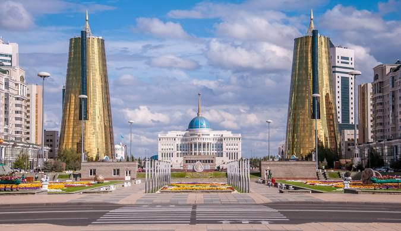

The modern capital of Kazakhstan with its futuristic landmarks and cultural heritage.
Astana, the capital of Kazakhstan, is a dynamic city known for its blend of traditional Kazakh culture and ultramodern architecture.
Astana blends modern innovation with traditional Kazakh culture, celebrated through its festivals, music, and art.